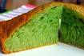

Vietnamese Honeycomb Cake Recipe
This Vietnamese honeycomb cake recipe makes a delicious, fragrant cake infused with Pandan flavor and coconut milk. With its fresh green color and fun chewy texture, this sweet treat is at the top of everyone’s snack cake list.

Ingredients:
*If you're not sure what these ingredients are, click on the food item to see how it looks like and where you can buy them.
If you need help on measuring these ingredients, please see table below for conversion.
Measurement Conversion
| Coconut Milk |
200 ml |
7 oz |
| Sugar |
200 g |
7 oz |
| Tapioca Starch |
240 g |
8.5 oz |
Instructions:
- In a small saucepan under low heat, dissolve the sugar and salt with the coconut milk. Let cool to room temperature.
- Grease only the bottom of the baking pan. Preheat oven AND the baking pan to 175°C/ 350°F.
- Crack 6 eggs in a mixing bowl. Use a fork or a whisk to stir the eggs. Do not beat the eggs or over-stir; just stir enough to homogenize the whites and yolks. The tip of the whisk should always be touching the bottom of the bowl. This is to avoid creating foam.
- Add the coconut mixture to the egg mixture and give it a few stirs. Sift the starch and baking powder into the mixture.Stir the mixture in one direction until smooth. Add pandan extract and vanilla.
- Use a strainer to strain the mixture into the heated pan.
- Place the cake pan right in the middle of the oven. Bake at 175°C/ 350°F for about 45 minutes, until golden. To test for doneness, insert a toothpick in the center of a cake. If the toothpick comes out clean, the cake is done.
- Let the cake cool upside down on a rack. The cake tastes the best freshly out of the oven. It can be stored for 1-2 days by wrapping in plastic wrap. If you serve it on the next day, microwave for about 15 seconds.
Important Notes:
Making this cake may sound very easy but it is also very easy to fail. If you don’t follow the measurements and instructions closely, the final product may lack of its honeycomb texture or collapse. Please strictly follow these guidelines to avoid failure:
- Do NOT use double-acting baking powder, only single-acting works. Difference: Single-acting works once when it gets wet. Double-acting works twice: first when it touches a liquid and then again when it is heated.
- Grease only the bottom of the baking pan. (The sides of the baking pan give the cake some support when it rises.)
- The baking pan needs to be well preheated in the oven before adding the batter.
- Only stir the batter in one direction. Do not over-stir the batter.
- Pour the batter into the preheated baking pan through a mesh strainer. This helps the honeycomb texture to develop and remove the lumps.
- Place the cake pan in the middle of the oven where the heat is centered. This helps the cake to rise and bake evenly.
- The time may vary a bit depending on the mold and the oven. However, do NOT open the oven during the first 30 mins of baking.
- In order to prevent the cake from collapsing, let it cool UPSIDE DOWN on rack.
If you prefer to follow the instructions with pictures
click here.
If you like this recipe and like to see more recipes from us, please
subscribe here.